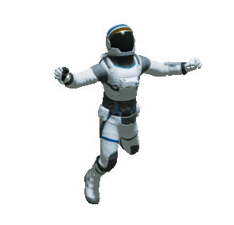

Quem sou eu
Olá eu me chamo Laís Cristina este é o meu portfólio, eu sou uma garota apaixonada por tecnologia e livros eu gosto muito de games, jogar e contruir também estou atualmente no 2 semestre da faculdade e quero sar uma grande Desenvolvedora de software e não vou medir esforços para conseguir vou me mantém estudando sempre e sei que vou conseguir meu objetivo, como podem ver eu gosto de design também e ser Front End é uma grande alegria os códigos são minha maneira de expressar com um trabalho arduo que é possivel com tecnologia e estudo descobrir outros mundos..
